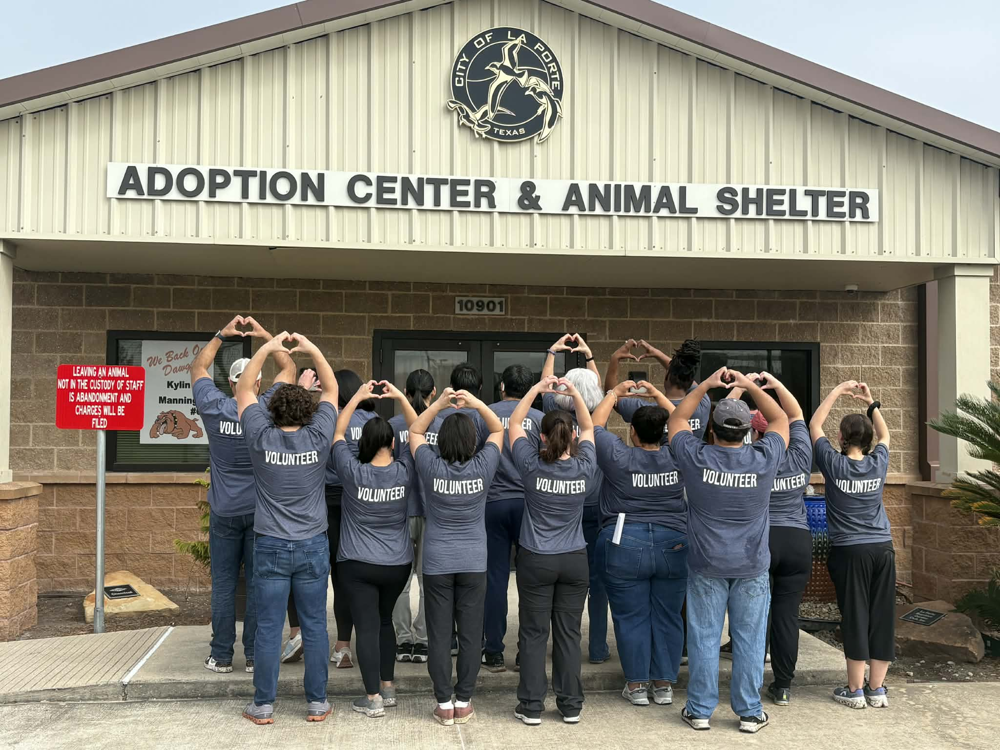
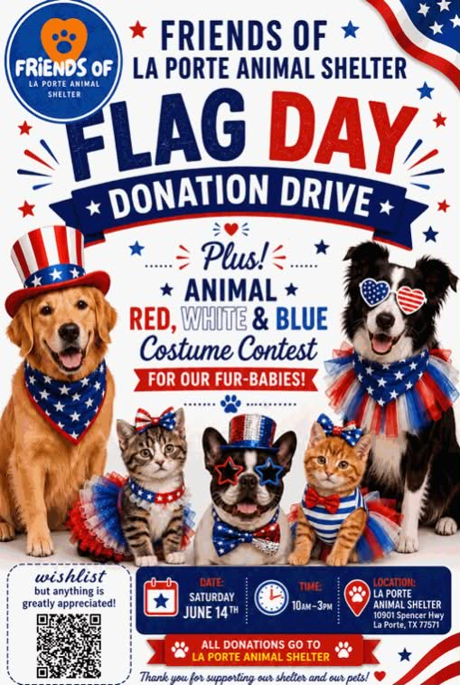
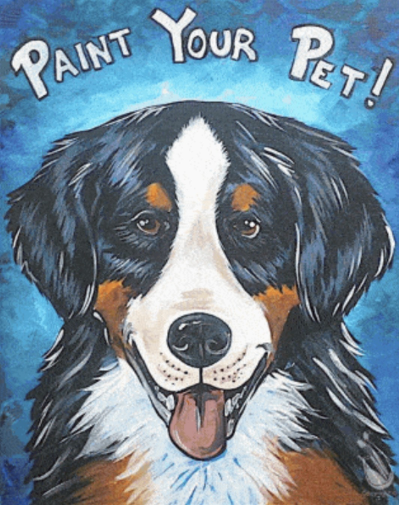

Supplies and Essentials
Donation drives and community gatherings help us gather food, litter, blankets, and everyday supplies that shelter animals need right away.

From fundraisers to donation drives, every event helps strengthen the shelter and connect more neighbors with the animals who need them.


These photos reflect the spirit of our events — caring neighbors, volunteer energy, and the shared goal of making life better for animals in La Porte.
Each gathering helps raise awareness, gather supplies, and bring more people into the shelter’s mission.




Community events are one of the best ways to turn compassion into practical help for the animals at the La Porte Animal Shelter.
Donation drives and community gatherings help us gather food, litter, blankets, and everyday supplies that shelter animals need right away.
Each fundraiser creates funds that directly support medical care, enrichment, and the day-to-day needs of shelter animals.
Events bring new supporters, volunteers, and neighbors into the shelter’s mission, expanding the network around the animals.
Become a member to receive updates, event announcements, and opportunities to support the shelter and the animals it serves.